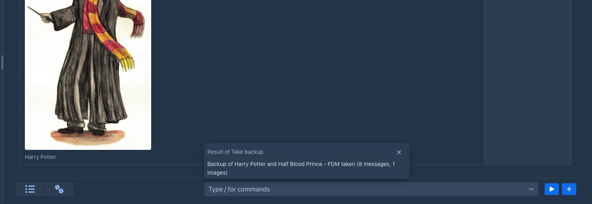

Commands
Commands are small actions you run by typing them, instead of clicking through menus: look something up in the story or the lorebooks, search and replace, take a backup. Extensions add commands of their own, for example to generate a lore entry or to make up names. The same commands are what an agent works with, so a command does one clear thing and says what it does: you can read it while you type.
The command line is the field next to the menu below the story, in the story editor.
Running a command
-
Click into the command line and type
/. The list shows all the commands, each with its name and a short description. Typing more narrows the list: the filter looks at the name of the command, its title and its description. -
Pick the command with the mouse, or with the arrow keys and Enter. A command that needs nothing runs at once; for one that takes arguments,
/nameis written into the field and you continue with the arguments.
The list of commands, opened by typing a slash -
Type the arguments and press Enter, or click the play button next to the field, to run it. The field is emptied as soon as the command starts; a text that is not a command stays, so you can correct it.
Text that does not start with / is not a command, and nothing is run. Clicking away from the field or pressing Esc
never runs anything, so you cannot start a command by accident.
The help
While you type, a small window opens above the field. It covers part of the story but moves nothing, and it closes when you leave the field or run the command. It shows:
-
what the command does,
-
the forms the command has (see
Forms ) that fit what you have typed so far, with the argument you are typing now highlighted and its description, -
what the command returns,
-
a hint when you have typed more arguments than the command takes, or when no command has that name.

While you are still typing the name, the list of commands is the help.
Arguments
Arguments are separated by spaces, and repeated spaces count as one. To put a space inside an argument, you have three ways:
The other special characters:
A backslash in front of anything else stays as it is, so C:\books\story is passed unchanged. If you open a quote and
never close it, everything to the end of the line belongs to that argument.
Arguments are text. A command that wants a number, a yes/no or one of a few options converts the text itself; if the text does not fit, the command is not run and a notification says so.
Forms of a command
One command can take different arguments: /hello-world with nothing, and /hello-world something with one argument
are two forms of the same command. Marginalia picks the form by the number of arguments you typed and by what they
look like. If no form fits, a notification says that the command does not take these arguments, and the help shows the
forms it does have.
The result
When a command returns something, it is shown in a window above the command line. Close it with the cross, with Esc, or just carry on: it disappears when you type something new or run another command. A command that returns nothing shows no window.

If a command fails, or there is no such command, you get a notification with the reason.
Commands that take time
Most commands answer at once. A command that needs time shows a window with an animated bar and a Stop button, and
the story is locked until the command is done. Under the bar the command can say what it is doing now and, in smaller
letters, the detail of the step. Stop cancels the command; it should return immediately. You can try it with
/hello-world-async.

Commands that change data
Every command says what it does to the data that already exists, and the command bar shows it as a small label next to the command, in the list and in the help:
-
Destructive (red) - the command changes or removes data that exists, like the search and replace commands that rewrite the book. Point at the label to see the explanation.
-
Non-destructive (green) - the command only reads data or adds new data, like
/take-backup, which adds a backup and changes nothing else.
The label is information for you; it does not stop the command when you run it. An agent goes by it: it is not given a destructive command, or has to ask you first, or runs it, as set for that agent. A command that asks for confirmation by itself is described below.
Commands that ask first
A command that changes a lot can ask before it does. The search and replace commands have no preview, so after the search they show how many matches they found in how many items and what would be replaced by what, and only Yes changes the book; No leaves everything as it was. The question stays until you answer it.

Commands that come with Marginalia
Reading the story
The commands above that read the book (/get-book-info to /get-template-variables) change nothing; they answer in JSON text,
so an agent can use them as well. Every row of an answer has a handle: the identifier of the part (or lorebook, or entry), which
does not change when parts are added, moved or deleted. A part is given by its handle, or by its position on a branch, the first
part of the story being 1; a branch by the handle of any part of it, or by its number from /list-branches (the numbers follow
the creation of the ends of the branches, so they change when a branch is added or deleted). Positions and numbers are easier to type,
handles are what an agent should use, and the commands that change the story take handles only. Without a branch the commands work on
the active branch. Lists are paged with offset and limit, long texts are cut into slices (offset, length) and the answer says
the total length. As with the other commands the options are positional: to set one, give those before it too.
The commands that read the lorebooks (/list-lorebooks to /preview-lore-activation) work the same way and reach only the lorebooks of the open
book: the root lorebook and its subbooks. A lorebook is its handle or its number from /list-lorebooks (the root is 1), an entry its
handle or its number in the lorebook, in the order of the lorebook (the first entry is 1); the numbers change when entries or subbooks are
added or removed. Without a lorebook the root lorebook is used.
Changing the story and the lore
These commands change the open book (or the working copy of an agent, which is where an agent's changes go). A part, lorebook or
entry is always given by its handle, never by a position or a number: those move when something is added or deleted, and a
position that was right when it was read may be another part by the time it is written. The options are positional as before. A
command that removes text or data is DESTRUCTIVE and asks you to confirm (an agent is covered by its destructive mode instead);
adding and changing are not. An edit of the story can make summaries outdated (a summary carries the hash of the story it
describes): the answer lists them and says what to do, /revalidate-summaries if they are still right, /regenerate-summary if not.
The commands that have the model write (/next, /swipe, /regenerate, the two summaries) take time and show the Stop window.
Commands that come with extensions
You see these in the list as long as the extension is loaded; each is described in the documentation of its extension.
The commands of the Lore Generator, the Name generator and the Name provider only read: the generating ones return text and
leave it to you, or to the agent that called them, to put it into an entry. The commands of the Arc Outline and the
Character Tracker also change the outline and the characters of the open book; only their delete commands are destructive.
Limits
- The command line is in the story tab of the desktop layout. The phone view does not have it yet.
- A command runs as you, in your session, and works with the book you have open.